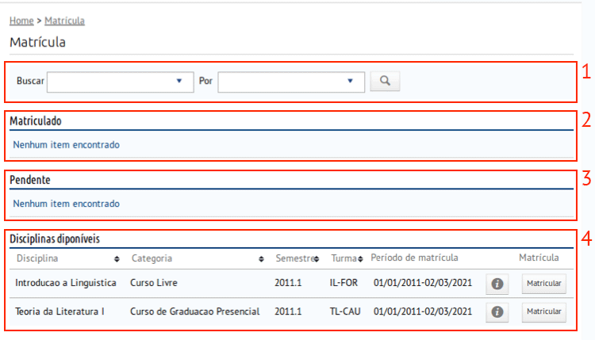
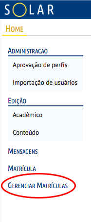
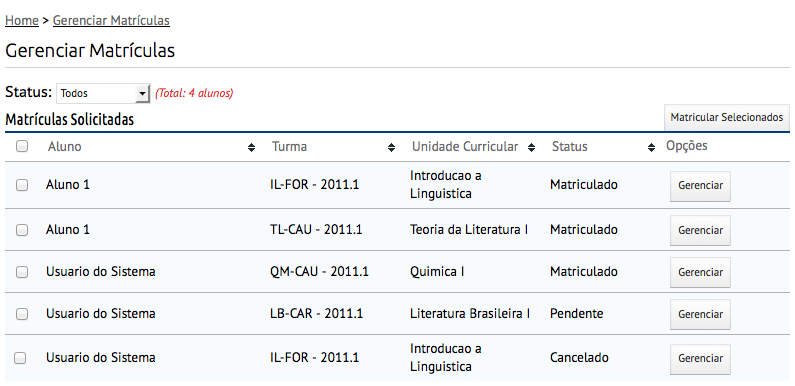
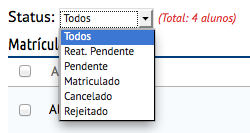
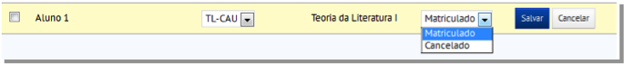
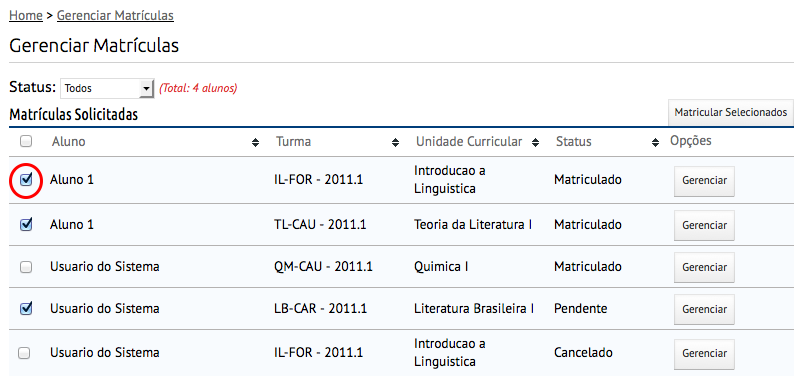

Matrícula¶
Neste tutorial apresentamos o módulo de Matricula e as seguintes funcionalidades:
- Informações gerais
- Acesso à matrícula
- Solicitar matrícula em uma oferta
- Cancelar matrícula em uma Unidade Curricular
- Gerenciar matrícula de usuários
Informações gerais¶
Após efetuar o devido Login no Solar 2.0, nos deparamos com o Home, página inicial do AVA.

- Ao solicitar matrícula, o usuário estará solicitando que um perfil do tipo Aluno seja associado a ele para determinada disciplina.
- Um perfil está associado a um conjunto de permissões que o usuário tem para realizar atividades no Solar 2.0.
- Ao realizar a matrícula, o usuário deve aguardar o aceite dessa para que possa estar devidamente matriculado na disciplina desejada.
- O Aceite de Matrícula é necessário para que um aluno possa cursar uma disciplina no Solar 2.0, exceto para as disciplinas dos cursos oferecidos pela UAB, pois a matricula destes é realizada pelo Módulo Acadêmico.
Acesso à matrícula¶
Ao acessar a tela de matrícula, o usuário se depara com quatro áreas. A primeira é a área de Busca, na qual o usuário pode buscar pelo nome da disciplina, primeiro campo de busca, ou por seu tipo, segundo campo de busca.
Ressaltamos que Disciplinas, no contexto do Solar 2.0, possuem os tipos:
- Curso de extensão;
- Curso de Graduação a distância;
- Curso de Graduação presencial;
- Curso de Pós-graduação a distância;
- Curso de Pós-graduação presencial;
- Curso Livre.
Para realizar uma busca, o usuário deve preencher ao menos um dos dois campos e clicar no botão de lupa para realizar a busca
A segunda área é uma lista de todas as disciplinas nas quais o usuário já está matriculado. Sendo que este pode, ou não, cancelar sua matrícula.
A terceira área é uma lista com todas as matrículas pendentes realizadas pelo usuário. Ou seja, todos os pedidos de matrícula que ainda não foram aceitos.
A quarta e última área é uma lista com todas as ofertas correntes (ou seja, cujo período de matrícula ainda está vigente) de disciplinas disponíveis para matrícula no sistema. O botão de informações abrirá a janela abaixo, que contém todas as informações disponíveis da oferta como detalhes da disciplina, período de vigência, período de matrícula e os responsáveis (professores, tutores etc) pela disciplina.

Solicitar matrícula em uma oferta¶
Para solicitar sua matrícula em alguma oferta de disciplina disponível, basta clicar em Matricular.

Ao clicar no botão informado, a seguinte mensagem de sucesso aparecerá.

Cancelar matrícula em uma Unidade Curricular¶
Para cancelar a matricula de Unidade Curricular, basta clicar no botão Cancelar pedido.

Será enviada uma mensagem de confirmação em seguida.
Gerenciar matrícula de usuários¶
Warning
Esta funcionalidade está disponível para o seguinte perfil: Editor
Após efetuar o devido Login no Solar 2.0, na página inicial (Home), o link de acesso à Gerenciar Matrículas está localizado no menu de navegação à esquerda.
Verificando status dos matriculados¶
Nesta página é listado o estado de matrícula de todos os alunos do sistema.
Caso deseje filtrar esta lista, basta utilizar a lista de opções de status, que a lista será filtrada automaticamente.
Matriculando aluno(s)¶
Note
Caso seja acionado o botão Gerenciar ou o botão Matricular Selecionados sem que nenhum aluno tenha sido selecionado, a mensagem Nenhum registro selecionado será exibida.
Para matricular um aluno, basta pressionar o botão Gerenciar . Serão exibidas as opções do aluno conforme apresentado abaixo.
- No item 1 escolha a turma
- No item 2 escolha se deseja o status de: MATRICULADO ou CANCELADO.
- Após escolhidas às opções clique em Salvar.
Para matricular vários alunos, basta marcar a caixa de seleção ao lado do nome de cada aluno e o botão Matricular Selecionados . Não serão exibidas as opções do aluno.
